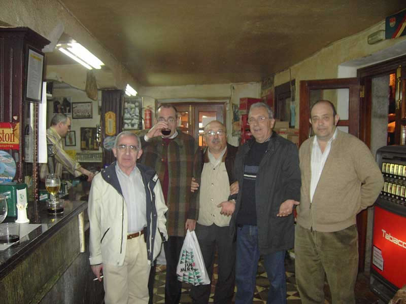

Encuentro en Santoña |
|
 Esta fotografía solo tiene de nuevo que estoy yo en ella. Como puede observarse, Joaquín Lacaci tuvo un 'aire' y no se movió de la postura que soportó estoicamente durante gran parte de la noche. Obsérvese que el brazo no está apoyado en ningún sitio, lo que ya hace más difícil y complicado el aguantar el vaso tanto tiempo de esa guisa. |